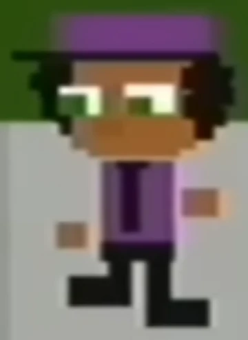

only picture of Esterino.
Chris Esterino used to work for Bunny Smiles Incorporated (BSI) as of 1982. He was working for Bon's Burgers when it opened, as mentioned by Susan Woodings, though it is unknown whether he had worked during that period or had just come back. His role in the company itself is currently unknown, However, he still does appear to work at Bon's Burgers. According to Charles Brook.